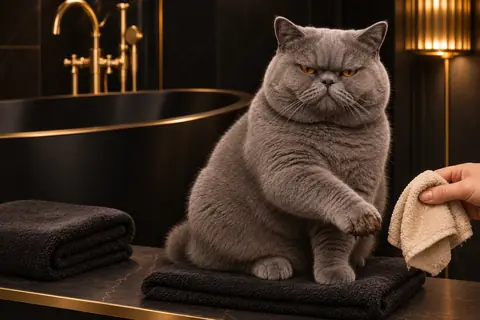

Koci Notatnik / Kocie opowieści
Spa pod nadzorem · ok. 6 min czytaniaKąpiel kota. Wybrałem niewolnika, nie ratownika WOPR.
Kochani, wybrałem sobie niewolnika, żeby otwierał saszetki. Nie przewidziałem, że po kilku tygodniach sam awansuje na kierownika aquaparku. Człowiek z inicjatywą to jednak ryzykowna inwestycja.

Najpierw zobaczyłem ręcznik. Pomyślałem: wreszcie nowy dywan do mojego apartamentu. Potem usłyszałem wodę. Pomyślałem: może sprząta. W końcu kiedyś musi.
Wtedy powiedział:
— Zrobimy ci kąpiel.
Zrobimy? Kochany, to samo „my” ostatnio składało meble. Ja nadzorowałem, ty zostałeś z trzema śrubami i półką pod kątem osobistych przekonań.
Skąd mu w ogóle przyszła do głowy kąpiel kota?
Miałem na łapie odrobinę zwykłego błota. Odrobinę. Człowiek uznał, że pora uruchomić program „bawełna 40”.
— Będziesz czyściutki!
Spędzam sporą część życia na pielęgnacji futra. Posiadam język z wyposażeniem fabrycznym. On myje twarz żelem trzy w jednym, a przychodzi oceniać mój system higieny. Odważnie.
Usiadłem przy drzwiach łazienki. Nie wszedłem. Trzeba czasem wyraźnie zaznaczyć, gdzie kończy się strefa obsługi, a zaczyna nieuzgodniona działalność wodna.
Czy kota trzeba regularnie kąpać?
Większość zdrowych dorosłych kotów sama dba o futro i nie potrzebuje rutynowych kąpieli. Potrzeby mogą być inne przy określonych problemach zdrowotnych lub zabrudzeniu. Ustal je z lekarzem weterynarii. Wysoka cena ręcznika nie jest wskazaniem medycznym.
Człowiek zamarł z ręką na kranie. Wyglądał jak ktoś, komu właśnie anulowano własną konferencję.
— Ale to miało być takie spa.
Moje spa polega na tym, że leżę na aksamicie, a ty rezygnujesz ze swoich planów. Mamy to już świetnie opanowane. Po co reorganizacja?
Co zrobić z małym zabrudzeniem?
Przy zwykłym, niewielkim zabrudzeniu czasem wystarczy delikatne przetarcie miękką, wilgotną ściereczką, zamiast kąpieli całego kota. Jeśli na futrze może być substancja toksyczna, od razu skontaktuj się z lekarzem — to inna sytuacja niż trochę błota.
Niewolnik wrócił ze ściereczką. Przetarł łapę. Brud zniknął. Cała operacja zajęła chwilę, bez wodowania jednostki flagowej.
— No widzisz? Dało się bez kąpieli.
Wspaniale. Sam wpadł na wniosek, który stał przed nim od początku i miał wąsy. Przypiszę mu ten sukces. Motywowanie personelu jest ważne.
A jeśli kąpiel jest naprawdę potrzebna?
Wtedy działamy według zaleceń lekarza. Preparat musi być przeznaczony dla kotów; ludzki albo psi szampon nie staje się odpowiedni dlatego, że ma na etykiecie słowo „delikatny”.
Człowiek spojrzał na własny szampon „objętość i blask”. Kochany, objętość mam. Blask również. Problemu z brakiem instrukcji na opakowaniu człowieka ten kosmetyk nie rozwiąże.
Przygotuj wszystko wcześniej: powierzchnię, na której kot się nie ślizga, letnią wodę i ręczniki. Nie zanurzaj kota, nie kieruj strumienia na twarz i nie zalewaj oczu ani uszu. Preparat dokładnie spłucz zgodnie z instrukcją, a potem osusz kota ręcznikiem i zapewnij ciepłe, spokojne miejsce bez przeciągu.
Jeśli kot panikuje, nie zamieniaj kąpieli w siłowanie. Ustal z lekarzem bezpieczny sposób pomocy. Film do internetu może poczekać. Zwłaszcza że po takiej produkcji człowiek najczęściej wygląda gorzej ode mnie.
Dlaczego przestałem sam dbać o futro?
Gdy kot wyraźnie zaniedbuje pielęgnację albo jego skóra i sierść się zmieniają, warto porozmawiać z lekarzem. Dokładanie szamponu nie wyjaśni przyczyny.
Mój człowiek powoli rozumie, że luksus oznacza dopasowaną opiekę. Nie nieustanne zabiegi, na które nikt się ze mną nie umawiał. Jeszcze trochę i będę mógł wystawić mu dyplom. Na razie dostaje naklejkę „próbował”.
Finał spa: kąpie się właściwa osoba
Wieczorem położyłem się na suchym ręczniku. Człowiek poszedł pod prysznic. Wreszcie kompetencje trafiły na właściwe stanowiska.
Wyszedł i zapytał:
— Zadowolony?
Oczywiście. Ja jestem czysty, on jest wykąpany, a mój ręcznik nagrzany. Czasem wystarczy odrobina nadzoru, żeby niewolnik stał się samowystarczalny. W granicach rozsądku.
Kąpiel kota: co zrobić naprawdę
- Większość zdrowych dorosłych kotów nie wymaga rutynowych kąpieli. Szczególne potrzeby ustal z lekarzem.
- Małe, zwykłe zabrudzenie często wystarczy delikatnie usunąć wilgotną ściereczką. Przy podejrzeniu toksycznej substancji pilnie skontaktuj się z gabinetem.
- Jeśli kąpiel jest potrzebna, użyj produktu odpowiedniego dla kotów i stosuj instrukcję lub zalecenia lekarza. Nie zastępuj go szamponem dla ludzi lub psów.
- Przygotuj letnią wodę, antypoślizgowe podłoże i ręczniki. Nie zanurzaj kota ani nie zalewaj oczu i uszu.
- Dokładnie spłucz preparat, delikatnie osusz kota i zapewnij ciepłe miejsce bez przeciągu.
- Nie walcz z panikującym kotem. Nagłe zaniedbanie pielęgnacji lub zmiany skóry skonsultuj z lekarzem weterynarii.